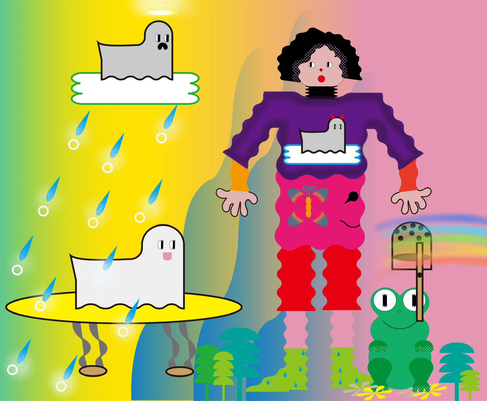

Hi, I'm yuugu.
上海出身。日本でアートジュエリーデザインを学んでいる間に、几何学的な要素を使って新しいスタイルの造形に興味を抱きました。帰国後はデザインの仕事をしながら、グラフィックデザインでデジタルイラストも描いています。


上海出身。日本でアートジュエリーデザインを学んでいる間に、几何学的な要素を使って新しいスタイルの造形に興味を抱きました。帰国後はデザインの仕事をしながら、グラフィックデザインでデジタルイラストも描いています。